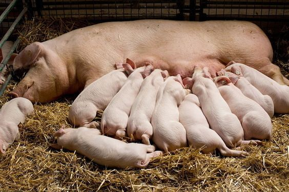
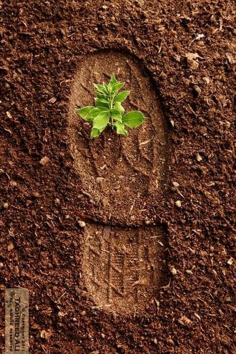

Técnico en Programación
Desarrollo de software, bases de datos y redes. Te recomendamos esta carrera por sus excelentes profesores y un ambiente académico motivador.

Técnico en Ofimática
Aprende procesamiento de texto, hojas de cálculo, presentaciones, correo electrónico y comunicación, junto con seguridad y buenas prácticas.
Técnico en Sistemas de Producción Pecuaria
Manejo y cría de animales, sistemas de producción, bienestar animal, sostenibilidad y medio ambiente.
Técnico en Contabilidad
Registro de transacciones, estados financieros, contabilidad de costos, impuestos y obligaciones fiscales, análisis financiero, auditoría y control.
Técnico en Agropecuario
Producción agrícola, gestión y administración agropecuaria, sostenibilidad y medio ambiente, con prácticas de campo.
